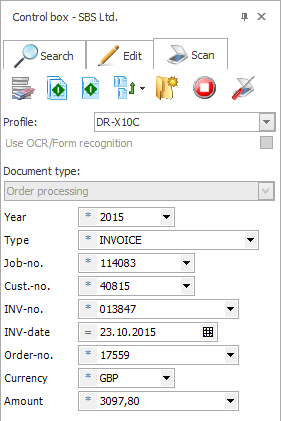

FileDirector
Document Management Software
1. Scan
Scan or Upload
FileDirector records electronic documents as flexibly and quickly as paper documents. The particular format and source are not an issue. No matter what applications your business uses — with the help of our tools, you can very quickly create interfaces to FileDirector.
FileDirector integrates out of the box with Microsoft office and Windows Explorer, meaning that electronic documents can be sent and catalogued there with a mouse click. Information such as filenames and date are recorded by the software, along with the sender or subject-line of e-mails. FileDirector offers the same powerful functions for paper documents too: one and the same application allows the user to record documents and search them in an already-digitised format. This means that user work at all times with a familiar user interface, regardless of whether they are searching or capturing documents originally in digital or non-digital format.
Capturing information is a very quick process using FileDirector. Scanning was never easier, as the program works with most digital input devices and uses pre-definable scan profiles. Thanks to the integration of FileDirector in Microsoft Office, you and your staff can archive documents, tables and emails with a simple mouse-click.
2. Sort
Index and Organise
Indexing and sorting documents is handled manually or via OCR (Optical Character Recognition) zones in the document, via full text or barcodes. Index data can be imported via ODBC from other databases or files, or transferred automatically when importing or recording.
3. Search
Search and Retrieve
FileDirector leaves you free to decide how to conduct your keyword search. You can use the defined index fields to search for information you need, either within an entire filing cabinet or within a given document type. You can also use full text search to locate the documents you need via their content.
The documents found are listed as hits that can then be sorted and filtered. If you double-click on a document in this list, it is displayed in a window. This makes the search result list a flexible and high- performance tool. the user can define the list format.
Document display via a miniaturised view or in original size offers ultimate flexibility for display. From the screen display, it is possible to send pages for printing, mailing, storage or copying, or even for a specific procedure — such as authorising an invoice.
FileDirector can handle a wide range of different document formats as standard. This means that if the software finds your search terms in a variety of different documents, you can display the files directly in FileDirector by double-clicking on them — even if you do not have the application installed that was used to create the document.
Simple Document Management
Thanks to its extensive range of functions, FileDirector meets all of your document management requirements — today and tomorrow. Ease of use, scalability and a wealth of expandable components make FileDirector the perfect partner for businesses of all sizes.
The benefits of an intelligent document management system are self-evident, for instance, of the improved efficiency: documents are located, stored and distributed more quickly. What’s more, staff do not waste time or money on duplicating or distributing documents. Digitizing avoids all these unnecessary steps and gives your staff more time to concentrate on the essentials. On top of this, document storage costs are reduced because a considerably smaller storage area is required.

FileDirector Can Pay You Back
- 11% of all paper documents are lost of misfiled
- Every year, the number of files increase by 50%
- Each document stored costs an average of £24
- Admin tasks cost firms 28 hours a week
In todays fast changing and complex business environment paperwork can restrict your ability to operate efficiently. Needless filing and searching costs business' valuable time and money. FileDirector means documents are stored, distributed and located faster. FileDirector removes the burden of paperwork and free's staff to focus on essential work.
A further reason for investing in FileDirector document management system is compliance with statutory requirements, since we help your organisation to minimise the financial or legal risks which can be caused by lost, damaged or improperly used information.
Document Workflow
FileDirector has its own workflow module to allow the automatic processing of documents within your company. Documents like invoices can be automatically picked up by FileDirector through emails or by scanning and can be directed to a specific person or department based on the index fields collected. The invoice could be sent to a specific account manager responsible for a specific company or even could be sent to a senior manager for a manual approval if the value is over a certain amount. Working alongside office integration, FileDirector has the ability to alert your employees when they have received a document for approval and an option can be set to forward the document on or remind the user if a certain amount of time has passed to prevent documents becoming lost.
Right at home with all your business software
Stand-alone solutions don’t bring about increases in productivity. That’s why FileDirector integrates with outstanding ease into your existing applications landscape. No matter what the applications you use — we are sure to have the right link for those applications.
Office integration FileDirector integrates seamlessly into Microsoft office products such as Word, Excel or Outlook. At the same time, the software also integrates with Windows Explorer, so that all commonly used Windows functions can interact with FileDirector.

Document Security
FileDirector also provides benefits such as better security control and new options for monitoring use of documents. You decide at all times who can have access to which document as well as what changes your employees make to documents. Revisions of documents are stored in FileDirector for quality management and to allow you to see what changes have been made and who made them. Then there is also the improvement in customer satisfaction, as a result of fast response times.
FileDirector is compliant with statutory requirements, since we help your organisation to minimise the financial or legal risks which can be caused by lost, damaged or improperly used information. Thanks to FileDirector, complying with the data protection requirements on retention periods and destruction of documents becomes much easier.
FileDirector Cabinets
FileDirector stores documents in Cabinets. These virtual Cabinets are able to store any document format. There are no limitations set by FileDirector on the size or number of documents stored. Normally a company would set up one Cabinet to store their documents. These documents are held in different Document Types. It is possible to search for documents in a Cabinet over all Document Types stored.
Document Types
In order to file and classify documents they are stored in different Document Types. In a typical office situation this could for example be Quotes, Orders and Invoices. A Document Type is mainly defined by the index fields used to classify the documents. These fields are selected from the pool of index fields which have been specified previously and should contain each index field used to classify all possible documents. FileDirector manages over 250 document formats, including MS Office, PDF, AutoCAD, and standard image formats such as TIFF, JPG and BMP. Using FileDirector’s Office Integration, MS Office documents and emails can be stored to FileDirector in their original format directly from the applications. Other documents can be created by scanning paper documents or importing existing electronic documents or spool data.

Scheduled Process
The FileDirector server has several schedulers which are extremely useful for recurring tasks such as document or index imports, which can be performed automatically on a fixed timescale, or selected folders can be monitored for new documents. Documents can be managed through a specific process, which is defined as a fixed series of steps. Certain users must work on the document in each step. Applications which cannot connect directly to FileDirector, and cannot create electronic documents to be imported can create image documents by printing to FileDirector’s Image Printer or Virtual Network Printer (VNP). These documents can be indexed and stored automatically. The versatile OCR module can create a full text index for full text retrieval or read defined zones with a forms recognition module. Reading of barcodes offers another possibility of automatic indexing.
Web Integration:
The WebServer is a constituent part of FileDirector that you integrate into your intranet or into the company’s website. It allows any internet user, or particular customers, to have access to the respective documents. Naturally, the security settings for document access can be adapted to suit your own requirements.
Codeless Connector:
Link applications already used in your business to FileDirector WinClient, with absolutely no programming needed. The only requirement is for a link, which can be quickly created, between the application index fields and FileDirector.

FileDirector Links:
Links can be used to call up documents in FileDirector from a company-internal application. In addition commands can be sent to WinClient to display existing documents or scan new documents. Specifically defined URL like commands contain the precise index data for a search or operation.